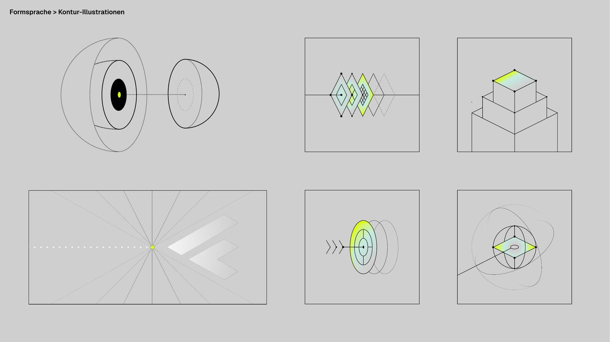
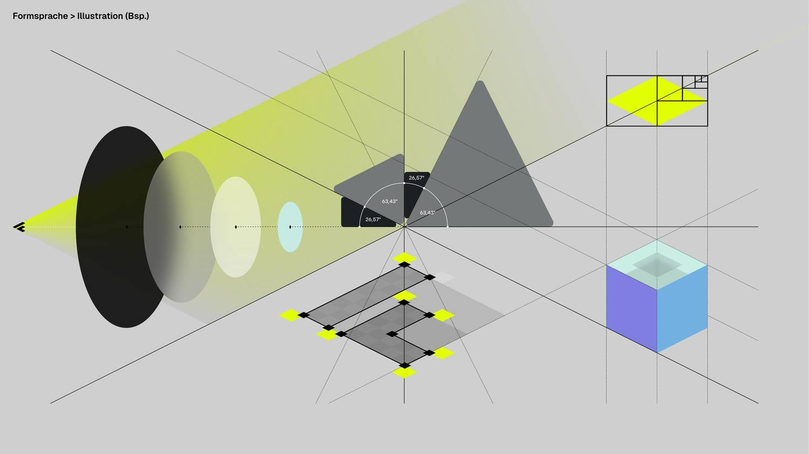

Foundations · 07
Illustration
The brand's pictures are technical drawings of objects that do not exist. They are built on the isometric lattice, bounded by 1 px contours, and lit exactly once. This page is the chapter that says how — it composes Geometry, Materials and Colour into one object, and it is the brief for drawing the next one.
Where this comes from
Two plates in the brand manual, and four objects cut from the designer's own vectors. The manual sets the vocabulary; the four process objects are the only place it was carried to production by the designer rather than derived here, so where the two disagree the plates are the intent and the vectors are the precedent. Everything else that is drawn in this language — the statement figure, the plot, the specimen at the bottom of this page — was built from the rules, which is the case this chapter has to make.
{kind=link}

{kind=link}

Read the second plate first. It is the same drawing as the first one with the scaffolding left in — the 26.57° and 63.43° rays through a single vanishing point, the subdivision squares, the lattice under the diamond stack. Nothing in a Control-F illustration is placed by eye. Every object on both plates can be reconstructed from the angles, and that is the property this page exists to keep.
The four that ship
| # | Object | Form | Light |
|---|---|---|---|
| 01 | Discovery | stacked cuboids telescoping out of frame | linear, near rake |
| 02 | Datenfundament | overlapping 63.43° plates, each finer than the last | radial, iso bloom on the rim |
| 03 | Weniger Ausfälle | a solid of revolution read on its axis | linear, mid rake |
| 04 | Mehr Leistung | a sphere cut by its equator, three orbits | radial, far rake |
They are built from the designer's source vectors in
assets/source/illustrations/ and documented, with their four deviations,
on Process Card. The
source vectors are the tie-breaker for
any number on this page.
The four layers
Every object is made of the same four kinds of element, and they have had class names
since the first card shipped — .cf-iso__* in
assets/css/components.css. The names are not decoration: the scroll
assembly, the stroke handling and the reduced-motion fallback all key off them, so an
element drawn outside the four gets none of it.
| Class | Is | Drawn as | Arrives at |
|---|---|---|---|
.cf-iso__scene | the whole object | a group — the only thing that travels | cover 5–30 % |
.cf-iso__ghost | reference geometry: the lattice, a construction axis, a state the object is not in yet | dashed contour, no fill | cover 20–40 % |
.cf-iso__orbit | a ghost that circulates — a path something travels, not a state. Carried in addition to .cf-iso__ghost, never instead of it | dashed contour, closed | cover 20–50 %, turning as it fades up; under .cf-iso--build it opens with the plan at 2 % and still settles at 50 — see Motion |
.cf-iso__form | the body — anything with a surface | 1 px solid contour, grey faces | with the scene — or, under .cf-iso--build, on its own --stage: cover 5–22 %, +7 % per stage |
.cf-iso__light | the one lit element | the lime ramp, contoured like everything else | cover 30–48 %; under .cf-iso--build the fill waits for its own stage to land — Motion |
.cf-iso__node | construction points | filled black dots, r = 3 / 2 / 1 | cover 35–50 % |
Six rows for four layers, and both of the extras are worth knowing.
__scene is the container, not a layer. __orbit is a
modifier on __ghost rather than a layer of its own — it is always
carried alongside it, never instead of it, so an orbit is still drawn as reference
geometry and simply also turns. The count of layers is four either way. The order of the
four is the material order from Materials —
reference geometry and contours (layer 04) before light (layer 05) — with the nodes as
the drawing's own annotation, the illustration's version of the information layer.
A layer that does not rest at full strength says so once, as
--iso-rest, and never as an opacity attribute on the shape.
The fade keyframe ends at var(--iso-rest, 1), so a literal in the markup is
silently outranked the moment the part animates — which is how the statement lattice's
69 sensors, each carrying its own derived intensity, all rendered at 1. One custom
property governs both paths instead: the animated one through the keyframe, and the
still one (below the @supports gate, under reduced motion, on paper) through
an opacity: var(--iso-rest) declaration beside it. Six of the parts the
keyframe touches rest at full strength and so say nothing at all. Held by
scripts/check-authored-opacity.py.
One object, taken apart
The specimen from § Drawing a new one, with each layer shown alone in the same frame. Every frame is the same 640-unit viewBox, so the parts register against each other exactly as they do in the finished drawing.
Construction — the lattice
Objects are not drawn in a 2:1 style. They are drawn on a 2:1 lattice, and every vertex of every object is a lattice point. The lattice has one free parameter, the unit u; both ground steps are then fixed:
| Step | On screen | Angle | What it is |
|---|---|---|---|
e1 | (+2u, +u) | 26.57° down-right | one ground axis |
e2 | (−2u, +u) | 26.57° down-left | the other ground axis |
e1 − e2 | (+4u, 0) | 0° | the level step — the only way to move sideways without changing height |
e1 + e2 | (0, +2u) | 90° | straight down the lattice, one cell |
The figure below is the lattice with one cell picked out and the three steps drawn on it. The level step is the long one along the top, and it is the same distance as two ground steps — it just does not descend.
The level step is not optional
This is the trap the plot fell into, and it is worth repeating here because an illustration is far more likely to hit it. Both ground axes slope 26.57° on screen. Marching a row of objects along either one therefore subtracts a unit of drawn height from every object as it goes: on the plot's five columns rising 31 → 100, the recession cancelled almost the whole climb and the tallest column was drawn lower than the shortest.
A row that is meant to read as level moves on e1 − e2. It is still a
lattice move — (2u, +u) + (2u, −u) = (4u, 0) — so nothing is off-grid. The three
columns in the specimen are placed exactly this way, which is why their heights are
readable as heights.
Light
One lit element per object. Not one per illustration and not one per section — one per object, and it is the element the eye is meant to land on. This is the same budget the rest of the system runs on (lime is a moment, not a surface), and it is the single rule the source vectors broke: card 02 arrived with lime in two of its three plates and the middle one was dropped to Glas.
Everything else in the drawing is grey. That is not a limitation — it is what makes the lit face mean something.
Which ramp, and how steep
One ramp, lime → Glas → CF-Grau, at one of three rakes. The rake is where Glas sits in the band, measured from the lime end, and all three are measured off the designer's files rather than chosen. Colour has the full derivation; this is the part an illustrator needs.
All three swatches are straightened onto one horizontal axis and built from
--rake-near, --rake-mid and --rake-far, so what
differs between them is only the rake. In the drawings they are not horizontal and two
of them are not linear: the shipping classes carry these rakes on the designer's own
axes — --gradient-light at 132.36°,
.material-rake--grazing at 239.25°, and
.material-bloom with its --iso and --top
modifiers for the radial half. Reach for one of those, not for one of these three.
| Object | Paint | Axis, as drawn | Rake |
|---|---|---|---|
| 01 stacked cuboids | linear | (349, 361) → (400, 454) | near · 0.32 |
| 02 layered plates | radial, 1:2 tall | centre (407.5, 528), rotate(90) scale(120 59.88) — the rotate swaps the axes, so 59.88 wide × 120 tall | lime on the rim |
| 03 solid of revolution | linear | (503.75, 407) → (352.5, 587) | mid · 0.51 |
| 04 sphere | radial | centre (400, 528.33), scale 120 × 120 | far · lime at 0.9–1.0 |
The light comes from above. Which side it comes from is the object's to
decide. That is what the table says once the four axes are laid out together,
and it is worth stating because the obvious assumption — one light source for the whole
brand — is not what the designer drew. Card 01's lime end is up and to the left; card
03's is up and to the right. What every one of the four has in common is that the lime
end sits at the smaller y: on a flat face the ramp climbs, and on a body of
revolution the light is on the rim rather than on a side at all.
A bloom is fitted to its object, not to a projection rule. Card 02's
ellipse is 59.88 × 120 and the rhombus under it is 120 × 240 — exactly half on both
axes. Card 04's is a circle on a sphere. Neither is the 2:1 isometric circle; they are
the shape of the thing being lit, scaled to it. So when a bloom is drawn with an
object, take the object's proportions. .material-bloom--iso is the other
case — a bloom with no object of its own, on a plate that is already in 2:1.
So: pick the end that reads as the object's own high point, and run the ramp down and away from it along a brand angle. Do not import card 01's axis into a new drawing on the grounds that it is the first one.
The waypoint that vanishes
Every lime → Glas leg inside an inline SVG carries one extra stop —
#DBFC60, at 19 % of that leg measured from lime — because Figma and SVG
interpolate in sRGB while the CSS gradients interpolate in oklab. The stop puts the SVG
leg back on the oklab path to within ΔE 0.0116.
It exists in none of the source vectors, so re-exporting a shipped illustration silently drops it and reverts that leg to the sRGB path. Nothing breaks; the stop is simply gone. Its position depends on the rake, because 19 % of the leg is 19 % of a different distance each time:
| Object | Lime at | Glas at | Waypoint |
|---|---|---|---|
| 01 · linear, near rake | 0.0 | 0.32 | 0.061 |
| 03 · linear, mid rake | 0.0 | 0.51 | 0.097 |
| 02 · radial, lime on the rim | 1.0 | 0.5 | 0.905 |
| 04 · radial, lime on the rim | 0.9 | 0.49 | 0.822 |
The rule behind all four is one sentence: the waypoint sits 19 % of the way from the lime stop to the Glas stop, whichever end lime is on. On a bloom lime is the last stop, so the offset counts backwards and lands high — which is why 0.905 looks nothing like 0.061 and is the same number.
Every waypoint in the shipping markup carries a comment at the stop itself. Keep the comment when you copy the gradient.
A transform is never a no-op on a gradient
A userSpaceOnUse paint server resolves in the user space in force where it
is referenced, which includes the element's own transform. Rotating a
circle rotates its gradient with it. Card 04's largest orbit lost a
rotate(-90) that looked redundant against a circle and was fading 90° off
the designer's axis until it was measured.
→ Process Card
Contour and fill
The contour is the drawing. A fill is what stops you seeing through the object, and it does that in three greys — no more, because a face is either pointing at the sky, at the light, or away from it.
The middle value is CF-Grau, which is also the top of the page wash — so an unlit face sits at exactly the page's own colour and the object would disappear entirely if the contour were not carrying it. That is the shape language stated as a measurement rather than as a slogan.
#CFCFCF and duck the question;
Geometry's demo object darkens the right face; the
manual's Isometrie-Raster plate darkens the left. This page takes the
geometry page's convention and ties it to the object rather than to the brand: the
shaded face is the one away from that object's own lime end. Under the
per-object light rule above, that is the only version that cannot contradict itself. If
a designer rules otherwise, one convention has to move — and it is three fill values,
not a redraw.
Two registers, and it is the face count that decides
Three greys is the register for an object of a dozen or two faces. At that density every face is large and a mid-grey face reads as a face. The four Expertise objects are not that object: they carry between 93 and 332 elements each, and drawn in the same three values they come out as clip art — one grey silhouette with its contours lost somewhere inside it. That is not a fault in the values. It is what happens when an area rule is multiplied by five. They spent one day, 2026-09-01, in the three greys, sunk into the page's own CF-Grau ground the way the reference plates draw a single primitive, and went back the next morning: what a plate can afford on a cube, a yard with five machines on it cannot.
So a dense object drops a register. Faces run near-white, the contour does all of the describing, and anything darker is an accent with a budget rather than a fill with a meaning.
The budget is the rule; the two values are only how it is spent. An
accent is a few square units of the lattice — a louvre, a sight glass, a window, a
manway — and there are a handful of them in a whole drawing. The moment one covers a
face it has stopped being an accent and the object is back in the first register with
worse contrast. Foundations sit one step under the machine that stands on them
(#FBFBFB / #F0F0F0 / #E2E2E2), which says
ground, not machine without a second contour weight. What the day in the three
greys left behind is the light: one lit top face per object, running the whole ramp from
lime at its back corner to CF-Grau at its near one, with two nodes on that face and none
anywhere else.
Line types
The four sanctioned types from Geometry, and what each
one means inside an illustration. In SVG they are stroke-dasharray, in the
px values the tokens declare, which is why the dashes hold their ratio at any render
size (see Rendering).
| Type | stroke-dasharray | In an illustration |
|---|---|---|
| solid | — | every edge of every real surface |
| 2-1 | 4 2 | a secondary axis — geometry that is real but not the subject |
| 1-2 | 2 4 | construction: centre lines, axes, the frame's own diagonals |
| 1-4 | 1 4 | the lattice, and any state the object is not in yet |
Stroke weight is 1 px throughout. Within one object the weight does not vary — depth is carried by node radius and by overlap, never by drawing the near edges fatter.
Nodes
Construction points are filled black dots at r = 3, 2 or 1, and the radius steps down with distance from the subject — card 01 puts r = 3 on the lit face, 2 on the stage below it and 1 on the one below that. They are not decoration and not a scatter: a node marks a point the construction actually depends on. Eight is a lot for one object; twelve is too many.
The frame
An object is authored in a 640 × 640 viewBox and clipped to it. It is normally
bigger than that and is positioned by a transform on an inner group — card
01 is drawn at true size and pushed translate(-80 -192) so its stack runs
out of the bottom of the frame. One drawing in the tree uses a different frame, for a
reason: see Where illustrations go.
The frame is a crop, not a bounding box. An object that fits neatly inside its frame with air all round reads as a sticker; one that is cut by the frame reads as a view into something larger, which is the whole intent of the manual's plates. Cut deliberately, on a lattice line, and never through the lit element.
transform, so the crop is free: the frame is a fixed box
and moving the drawing inside it costs nothing. The four field objects are laid out at
--vb-w / 112 × --field-unit, so that one lattice cell of the drawing is one
cell of the lattice ground they stand on — which makes the frame's width the drawing's
rendered width, against a column that is 573 px. Frame width is no longer free, and
composing a cut means buying it in render scale: the object gets smaller by exactly the
amount of ground it is asked to run off the edge with. Object 01 was authored to the
rule over three passes and read back each time as “the image is cut off”, because what
the reader sees at the two ends is a 26.57° plate corner stopping on the vertical edge
of an <svg> box, against a page whose own ground is a quiet grey
lattice — the frame has no card, no rule, no material of its own to be a window in.
All four are cropped to their own extent plus a pad, and the composing is done in how
much ground each object draws.
→ scripts/expertise-objects/objects.py, maschinenbau()
<svg class="cf-iso" viewBox="0 0 640 640" fill="none" aria-hidden="true"> <defs> <clipPath id="cf-05-frame"><rect width="640" height="640"/></clipPath> <!-- one gradient, one rake, one waypoint --> </defs> <g clip-path="url(#cf-05-frame)"><g class="cf-iso__scene"><g transform="translate(-80 -192)"> <!-- ghost → form → light → node --> </g></g></g> </svg>
Three nested groups and each one earns its place: the outer clips, the middle is the
only thing that travels on scroll, the inner positions the drawing inside its crop. The
ids are prefixed per object because several illustrations share a page and
SVG ids are document-global.
Rendering
- SVG, always. A 1 px contour is a 1 px contour at every size; a raster of one is grey mush at any other size.
vector-effect: non-scaling-strokeis applied by.cf-isoto every shape inside it. Without it a 640-unit drawing shown at 352 px puts its contours on screen at 0.55 px. It also pins the dash patterns to their px values, which is what keeps a 1-4 ghost a 1-4 ghost.- One size per set.
.cf-process__figure > svgcaps at 22 rem / 352 px so the four objects read as a sequence rather than four drawings that happen to be adjacent. - And a second cap on the other axis, because a width cap alone is not a
size cap. The four objects are square and their panel is 4:3 until the card
goes two-column, so on a phone the drawing was taller than the box it was centred in
— a grid item is not shrunk to fit its area, and the object crossed the panel's own
hairline into the copy. Measured at a 375 px viewport: a 268 px drawing in a 249 px
panel with 32 px of padding declared on every side.
max-block-size: 100%binds it to whichever cap is tighter; above 56 rem that is still the width and nothing changes. Any illustration dropped into a box whose aspect ratio does not match its own viewBox needs both caps.
Motion
An object assembles as it scrolls into view, with no script at all: a view timeline on
.cf-iso and one animation per layer. The order is the drawing's own logic —
the body arrives along 26.57°, the reference geometry resolves, the light comes up, and
the construction points land last. Ranges are in the table in
§ The four layers; the full account is in
Motion.
An object made of parts is assembled rather than delivered. Add
.cf-iso--build to the <svg> and the scene stops
travelling; each .cf-iso__form arrives instead, on a --stage
you index and out of a direction you author as --build-dx /
--build-dy in viewBox units. The rule that keeps it honest is that
a part may travel only along an axis the object already contains, and only as
far as the drawing says: a telescoping section on the shaft axis, by exactly
how far it is extended; a plate on a rack by one slot pitch; a graduation out along its
own radius. Both travel properties default to zero, so a part with nowhere to come from
resolves in place — which is most parts of most objects. The four objects in
Was wir machen all build; see
Motion > An object that is assembled, not delivered.
Two properties of that are load-bearing for anyone drawing a new object.
Only translate, transform, opacity,
fill-opacity and stroke-dashoffset animate — nothing
reflows and nothing scales.
And the finished state is the authored state: with no support for
scroll-driven animations, under prefers-reduced-motion, or on paper, the
object is simply drawn complete. If a drawing only makes sense once it has animated, it
is not finished.
An object pinned to the screen has no timeline of its own. A sticky
element never travels through the viewport, so its view() progress is frozen
and none of the above runs: the object is simply there, finished, at every scroll
position. Where the page scrubs the build rather than the object's own arrival, the
layers read the track's timeline instead, and the body comes up in passes —
each .cf-iso__form group carries data-stage, numbered by depth,
0 for the foundation and 3 for whatever stands nearest the reader. The build is then the
drawing's own paint order played at reading speed, and because a stage is a group, that
same numbering is what stops a hairline surfacing through the mass in front of it.
Shipped on Expertise.
Accessibility
- Decorative by default. The four process objects are
aria-hidden="true", because the card's copy carries the meaning and a description of an isometric stack helps nobody. - If an illustration carries information the text does not, it is not
decorative — give the
<svg>role="img"and a<title>, and say what it shows rather than what it looks like. - Never put text in an illustration. It will not scale with the
reader's type size, it will not translate, and it is not selectable. Labels belong in
the markup next to the drawing — this page's own figures use
<figcaption>for exactly that, and the three<text>elements in the lattice figure are the documented exception: they name the steps on the steps, which is a thing a caption cannot do. That figure is a diagram about geometry, not an object — no shipping illustration has any text in it. - Contrast is not a constraint here, and that is a consequence, not luck.
Nothing in an illustration is read, so nothing in one owes 4.5:1. The moment a drawing
does carry a label, the label owes the same contrast as any other text on the page wash
— which on CF-Grau means
--text-secondary, never--text-muted.
Rules
Do
- Put every vertex on the lattice, and every diagonal on 26.57°, 63.43°, 45° or 90°.
- Move a level row on
e1 − e2. - Light exactly one element, and make it the one the eye should land on.
- Bound with contours; fill only to occlude.
- Let the frame cut the object.
- Carry the oklab waypoint into every inline lime → Glas leg.
- Ship the finished state; let the animation be extra.
Don't
- No second lit element, however small.
- No colour outside grey + the one lime ramp — Sky and Violett belong to the foil, not to objects.
- No true 30° isometry, no perspective, no vanishing point in the object itself.
- No drop shadows, bevels or inner shadows — depth is overlap. Figma's bevel on card 03 was dropped for this reason.
- No varying stroke weight to fake depth.
- No text inside the drawing.
- No raster export.
Three ways to get it wrong
The same cube, drawn correctly and then three times against the rules. The third one is the one worth staring at: it is textbook 30° isometry, its top face is five units taller than it should be, and next to the correct cube it barely looks different. That is exactly why the projection is a rule and not a preference — nothing about a wrong angle announces itself, it just stops registering with everything else on the page.
Drawing a new one
The object below exists only to be evidence: it was drawn from this page and nothing else, after the four cards were already finished. Three columns rise on a plate, and the column that has not been built yet is ghosted in on ground that is already there. The plate runs out of the frame on both sides, which is the crop rule doing its job — the ground does not end, the view does.
Every number in it is derived, and that is checkable rather than claimed. The lattice is
u = 30 centred on (320, 340); the plate is three cells out along each ground axis, so
its corners are (320, 160), (680, 340), (320, 520) and (−40, 340) — two of them outside
the frame. The three column footprints sit at (200, 280), (320, 280) and (440, 280): one
level step of (120, 0) apart, which is e1 − e2 at u = 30. Their heights are
60, 90 and 120 — two, three and four units — and because the row is level, those three
numbers are what the eye reads off the drawing. Every column's front vertex lands on the
plate's own horizontal diagonal. The gradient axis runs (440, 160) → (470, 220): 63.43°,
lime at the top.
The checklist
Before an object is finished, in this order:
- Every vertex is expressible in steps of u from one origin. Write the origin down.
- Every straight line is on 0°, 26.57°, 45°, 63.43° or 90°. Measure them; 26.96° looks identical and is not the same thing — card 04's source vector carried one, and it was trued on the way in rather than on the way out.
- Rows that must read as level move on
e1 − e2. - Exactly one element carries the lime ramp, at one of the three rakes, and it is the subject.
- Each lime → Glas leg carries the oklab waypoint, with its comment.
- Fills are only
#DADADA/#CFCFCF/#C4C4C4; every surface has a contour. - Dash patterns are one of the four sanctioned types.
- The frame cuts the object somewhere, and not through the lit element — unless the frame is the object's rendered width, in which case it is the object's own extent plus a pad. Both cases.
- Layers carry their
.cf-iso__*classes, in the material order. - It reads correctly with animations off, at 352 px, and printed.
Where illustrations go
An object is expensive attention. One per section is the working limit, and the whole shipping tree holds fourteen of them:
| Where | What | Frame | Lit |
|---|---|---|---|
| Landing page · process ×4 | the four objects in the table at the top of this page | 640 | yes |
| Expertise · fields ×4 | one object per field, each cropped to itself | 642.4 / 653.6 / 657.6 | yes |
| Über uns · page header | a core in its shells, read on the axis of its reflector | 586 | yes |
| Über uns · value table ×3 | three people, three chevrons, a wheel with a globe in it | 160 | no |
| 404 page | a level row of units with one missing, its empty socket lit | 640 | yes |
| Blog article | the plot — a number drawn in space | 640 | yes |
.lp-flow — act 2’s root, 1200 × 620, written by
scripts/expertise-objects/gen-flow-root.py and outside the
.cf-iso vocabulary entirely — so no .cf-iso statement figure
ships on that page at all. The one this row described lives on
the statement component and in the
prototype, and it is 1200 units wide, not 480:
components.css derives its arrival from that width at the declaration and
says so in as many words — “this figure is 1200 units wide wherever it is used, so it
takes 1200 / 40”. A census of the shipping tree was counting a figure the
shipping tree does not have, at a frame nothing in the system draws.
→ scripts/check-figure-roster.py
svg is width="140" in a 240 px cell and the drawing fills 130 of
its 160 units, which lands at 47 %. The geometry above is the mockup's; the size is a
layout number, and one figure cell is not the place a routine settles it.
640 is the house frame, not the rule. Eight of the fourteen are drawn in
something else, and each has a reason: the four expertise objects and the Über uns
header are cropped to the drawing the designer handed over, in its own coordinate window,
so nothing had to be retyped into a square; and the value-table three are figure-cell
marks at 160. Every one of them owes --iso-travel its own value —
viewBox / 40, so the arrival is the same fraction of the drawing whatever
the frame. → Motion > How far it travels
The hero is outside this count entirely — it is video, not vector, and it is the one place the brand's light moves on its own.
A page that wants a fifteenth object usually wants a plot or an icon instead: the same language at two smaller scales, one for a number and one for a label.
The minimal register — a drawing that ships as a picture
Everything above is written about an object inline in a page: an Expertise
object's 93 to 332 elements, a ghost layer, a trace that draws itself as the signal
arrives, nodes stepping down through three radii. The news archive's title plates are the same language
with those affordances removed, and each removal has a cause rather than a preference.
They are exported to raster and loaded through an img, so there is no view
timeline and no draw-on, and vector-effect: non-scaling-stroke buys nothing.
They are read at 380 px in the archive grid and 568 in the lead cell, where an element
count that carries at 640 inline arrives as texture. And the person choosing one is
choosing it in the CMS, from a thumbnail. → Two registers, of
which this is the sparse one taken to its floor.
Five rules, and four of them are arithmetic
- Two to five bodies, and nothing that is not a body. No ghost, no trace, no orbit, no construction line. Whatever the drawing argues has to be in the solids — a hub with three arms drawn and a fourth absent says what an arrow said, and says it in the object.
- Every face on a multiple of two. The ground lattice is drawn at
constant x and constant y in steps of
2u, so a body whose faces land on even coordinates stands on the drawn grid and one that does not floats a half-cell off it. The lattice is the only thing in the frame a reader can measure the object against; agreeing with it is most of what "aligned" means here. - Symmetric under x ↔ y. Screen x is
(x − y)u, so swapping the two ground axes mirrors the drawing about the vertical through its centre. A form that survives the swap is bilaterally symmetric on the plate; one that does not leans. A body centred on the diagonal survives it alone — anything else comes in a pair, one on each ground axis. That is why the arms of a hub are two or four and never one or three. - One lit face, and four nodes on it. The specimen above puts r = 3 on all four corners of the face it lights. Three of the four is not a lighter version of that, it is an asymmetry, and on a square read at 380 px the eye finds the missing corner before it finds the object. Nothing steps down below the lit face: a plate has one subject and no third stage to mark.
- Painted back to front, by x + y. Depth in this projection is the sum of the ground coordinates. A near wall painted before what it encloses lets the body inside cut through it, and a closed ring stops being closed — which is a fault no check can see and every reader can.
The frame is 3:2 for the whole set, because the card that shows it is
aspect-ratio: 3 / 2; object-fit: cover and will crop anything else with no
say from the drawing. One size for the set as well: each plate is
cropped to its own extent plus a pad, then every crop is widened to the largest any of
them needs, so ten drawings in one grid read as one system rather than as ten drawings
that happen to be adjacent.
scripts/news-objects/objects.py holds the ten, emits the vector sources it is
checked against, and exports the PNG a person uploads; scripts/check-news-objects.py
holds them to the projection in CI — every straight edge on a brand angle, nothing outside
the frame, one lit element, three greys and the ramp. The generator does not publish. A
post's picture is whatever its Titelbild holds in Notion, and the site's
image folder has exactly one writer, scripts/sync-news-notion.py.